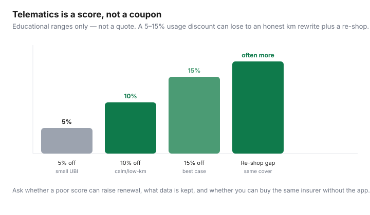

Transportation · Canada
Are usage-based and telematics auto discounts worth it for Canadian drivers?
Usage-based insurance (UBI) and telematics apps promise a discount if you drive like a saint. Some calm, low-kilometre, daytime drivers do save. Others enrol because a quote form checked the box, then discover a score, a renewal surprise, and a phone that logged every trip. This is a Canadian decision framework — beside ordinary quote shopping — not a product pitch for any insurer’s dongle.
Educational only. We are not a broker. Pair it with broker vs direct and legal premium levers. Provincial systems differ: ICBC, SAAQ + private damage, FSRA Ontario.
Disclosure: Insurance quote comparison tools are an offer type. Saving Optimizer may earn a commission if we later add partner links. We are not an insurance broker, agent, or insurer. We do not sell policies. Compare quotes with licensed intermediaries and read your province’s regulator (FSRA in Ontario, AMF in Québec, ICBC materials in B.C., and so on).
Key takeaways
- Typical Canadian UBI: a plug-in or smartphone app scores speeding, braking, night driving, and sometimes kilometres. The “discount” is a score-dependent credit — and sometimes a surcharge path at renewal.
- Who benefits: low annual km, smooth braking, mostly daylight, predictable suburban commutes. Who should skip: night shift, downtown parking-lot potholes, teen occasional drivers, people who will not tolerate GPS logging.
- Ask four questions before you enrol: Can a poor score raise the renewal? What data is kept and for how long? Can you buy the same insurer without the app? Is the discount applied to the same coverage sheet?
- Often the bigger save is declaring honest lower kilometres and re-shopping two channels on identical coverage — without giving anyone your location history.
- Ontario: FSRA allowed more UBI designs after withdrawing older guidance in 2020. B.C. has ICBC distance discounts with odometer readings — not the same as an Ontario app. Québec private damage insurers may offer their own UBI; SAAQ is not that product.
How telematics / UBI programs typically work in Canada
Insurers brand them differently (usage-based, telematics, “safe driving”). The machine is similar:
- You opt in at quote or mid-term. Some discounts need a trial period before anything hits the bill.
- A device in the OBD port or an app collects trips: time, speed vs limit, hard brakes, acceleration, phone distraction, and sometimes idle or mileage.
- A score maps to a credit at renewal or after 90 days. Marketing ranges of 5–25% are ceilings, not your quote.
- You can usually quit the program; ask whether you keep any credit and whether the insurer keeps the data.
This is not ICBC’s odometer distance discount (under 5,000 km Basic / under 15,000 km Optional). That is a kilometre band with two readings, not a braking score. Do not mix the words. See cutting costs inside ICBC.

Who benefits: low-km, calm, daytime drivers
Be honest in the driveway, not on the application:
- Good fit: 8,000 km/year, no rush-hour highway, few 11 p.m. trips, you already drive like someone who hates tickets.
- Bad fit: night healthcare shifts, delivery side-hustle, winter mountain weekends, a downtown core full of sudden stops, a household teen who will borrow the car (their score may be the policy’s problem — ask).
- Maybe: hybrid office 3 days. Kilometres dropped; night and braking may not have. The app still sees Thursday 5:40 p.m. on the 401.
If you would change how you drive only because a phone is watching, you will be miserable and the discount will be small. If you already drive that way, the app is a receipt.
Privacy and data trade-offs to weigh
Telematics is a location and behaviour log. Read the insurer’s privacy statement, not the app-store screenshot.
- What is collected (GPS crumbs vs trip summaries vs raw speed)?
- Who else sees it (affiliates, data processors, “research”)?
- How long is it kept after you quit or switch insurers?
- Is it used only for the score, or also for claims investigation?
- Does a phone-based program need location always-on (battery and a second privacy surface)?
Some households will not trade that for 7%. That is a complete answer. There is no prize for enrolment.
How scores affect renewals—questions to ask
Ask the licensed person, in writing if you can:
- Is the first-year credit guaranteed, or estimated?
- Can a below-average score increase premium at renewal versus never enrolling?
- What happens after a claim or a ticket — does the program stack with other surcharges?
- Is the discount on the whole premium or only on collision?
- If I delete the app for a month, do I lose the credit immediately?
FSRA’s consumer page on saving (reviewed with our shopping guide, 16 Sep 2026) still starts with shop around, ask discounts, honest information, higher deductibles you can pay — not “download our partner’s app.” Treat UBI as one optional discount on a coverage sheet you already understand.
Compare against simply declaring lower annual kilometres
If you went hybrid, the first lever is tell the truth about commute and annual km and bring odometer evidence to renewal. That can move the rate class without GPS. FSRA and every regulator care about misrepresentation the other way: claiming pleasure use while you five-day commute is how claims get ugly. Do both: honest km, then decide on the app. Do not enrol in telematics to “prove” kilometres you could have declared with two photos of the dash.
| Situation | Try first | Telematics? |
|---|---|---|
| WFH, km actually fell | Rewrite use and km; re-shop | Optional, if privacy is fine |
| Already low-km, calm, curious | Same coverage quotes × 2 channels | Yes if score cannot surcharge |
| Night shift / downtown / teens | Deductible and vehicle group | Usually skip |
| Quote form pre-checked UBI | Uncheck; requote bare | Only after the four questions |
When to skip telematics and just re-shop quotes
Skip the app when any of these are true:
- The insurer cannot (or will not) sell you the same coverage without UBI.
- A poor score can raise the price versus a non-UBI policy.
- You will not read the privacy policy.
- You have not compared a broker and a direct writer on an identical sheet this renewal.
- You live in a public-basic province and the “telematics” pitch is actually a private optional add-on you do not understand — stop and map ICBC or SAAQ first.
Re-shopping on the same liability limits, accident benefits, deductibles, listed drivers, and kilometres still moves more money for more households than a 5% behaviour score. Start 3–6 weeks before renewal. Do not cancel mid-term just to chase a banner (FSRA’s own caution in Ontario).
Checklist before you enrol
- Write the coverage sheet (see the broker-vs-direct guide). Quote with and without UBI at the same insurer if they allow it.
- Get the four answers (surcharge, data, opt-out, what the credit applies to).
- Decide privacy. If the answer is no, stop. That is success.
- If you enrol, drive the first 30 days like you actually live — not like a road test. The score should reflect the household, or you will hate renewal.
- Calendar a mid-term check: still saving, still comfortable, still the same commute? Quit if not, using the exit rules you wrote down.
Telematics is a contract about data and a score. Treat it like one. It is not a personality, and it is not a substitute for shopping the market you actually live in.
Sources & date stamps
- FSRA, “How to save on auto insurance” (Ontario consumer page), reviewed with companion shopping guides 16 Sep 2026 — shop, discounts, honest km, deductibles; UBI designs after 2020 guidance change.
- ICBC distance-based discount pages — odometer bands, not smartphone scoring (see the B.C. guide).
- AMF / SAAQ materials — Québec splits injury (public) and damage (private); UBI if offered is on the private policy.
Frequently asked questions
Are telematics auto discounts worth it in Canada?
They can be for low-kilometre, calm, daytime drivers who accept location logging and who have confirmed a poor score cannot raise the renewal. Many households save more by declaring honest kilometres and re-shopping identical coverage.
Can a usage-based program increase my premium?
Ask before you enrol. Some programs are discount-only; others let a weak score hurt you at renewal versus never joining. Get that answer in writing from a licensed person.
Is ICBC’s distance discount the same as telematics?
No. ICBC’s published distance discounts use odometer readings and kilometre bands (for example 10% on Basic under 5,000 km). That is not a braking-and-GPS app. Do not mix the products.
Should I enrol because the online quote checked the box?
No. Uncheck it, requote the same coverage, then decide after you read the privacy terms and the surcharge rules. A pre-checked box is a sales default, not a recommendation.
Does telematics replace shopping around?
No. FSRA-style advice still starts with comparing identical coverage across channels. UBI is an optional layer on one insurer, not a substitute for a second quote.